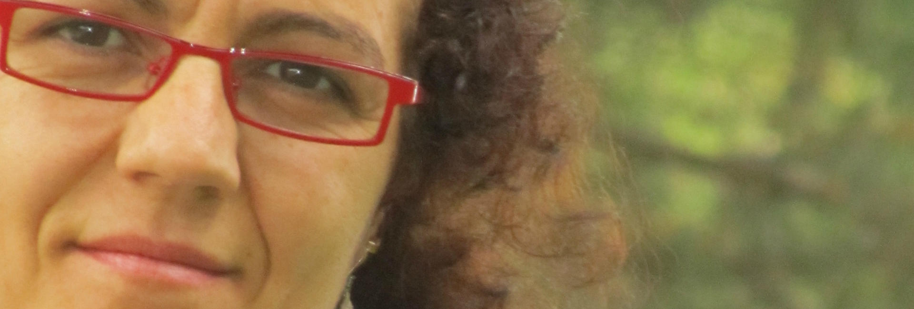

XEGA organizó esta charla-coloquio a cargo de Isabel Gómez, Portavoz «L» de la Federación Estatal de Lesbianas, Gais, Transexuales y Bisexuales (FELGTB). Fue en el Conceyu Abiertu del Llar Solidariu (Calle Gascona 12, bajo A, Oviedo) el jueves 18 de junio a las 20:00 horas.
Gestación subrogada
La gestación subrogada es una forma de reproducción asistida en la que, además de los/as futuros/as padres/madres, participa una mujer cisexual u hombre transexual que gesta el embrión. Este embrión puede ser el resultado de una inseminación artificial o de una fecundación in vitro y los gametos pueden proceder de uno/a de los/as progenitores/as y de una donación, de los/as dos progenitores/as, o de donaciones.
Esta técnica se produce cuando, mediante un acuerdo voluntario, una mujer cisexual u hombre transexual, con plena capacidad de obrar, consiente libremente en llevar a cabo la gestación, con el compromiso de que las otras personas intervinientes serán consideradas progenitoras a todos los efectos.
Isabel Gómez

Isabel Gómez es la Portavoz «L» de la Federación Estatal de Lesbianas, Gais, Transexuales y Bisexuales (FELGTB), el enlace de los equipos relacionados con Políticas de Mujer, Familias y Juristas.
"Debutó" en el activismo de la mano de su hija, fue ella la que le impulsó a buscar realidades semejantes para tejer reivindicaciones y procurarle un mundo donde la discriminación por la orientación sexual de sus madres no fuese motivo de rechazo o discriminación.
Así, con gran ilusión, en el 2005 contribuyó a la creación de GALEHI, Asociación de familias LGTB de Madrid, entidad que presidió de 2010 a 2012, pasando posteriormente a formar parte de la ejecutiva de FELGTB.
Isabel entiende el activismo como una actitud vital determinada de estar en el mundo, "el activismo cotidiano", nuestro día a día está lleno de oportunidades para ir conformando una sociedad más justa e igualitaria. No es necesario estar en organizaciones sociales para buscar y trabajar alternativas que posibiliten un mundo más digno. Pero es verdad que trabajar en organizaciones plurales y comprometidas te hace sentir de una manera muy directa y emocionante que somos muchas las personas que queremos trabajar por estas causas en red, buscando las sinergias de nuestras voluntades para armar con fuerza las reivindicaciones, modulando y modelando políticas de inclusión y respeto.
Fue a colegios religiosos en una provincia castellana de la que emigró a Madrid a estudiar en la universidad la diplomatura de Enfermería, unos años después se licenció en Ciencias de la Imagen.
Dice de sí misma que es una mujer en edad madura, feminista, lesbiana, ciudadana, madre, de izquierdas, enfermera, inquieta, seca en la expresión, demasiado apasionada en su argumentaciones y hay días que también es una procrastinadora contumaz. Por lo demás se considera una buena persona.
Conceyu Abiertu del Llar Solidariu
Calle Gascona 12, bajo A, Oviedo
Debate en los medios
- 25/06/2015 - El Comercio - Carmen Sanjurjo: «No cabe alquilar el cuerpo de una mujer para fines reproductivos»
- 30/06/2015 - La Nueva España - "No somos vasijas"
Ésta es una actividad organizada por XEGA, con la colaboración del Conceyu Abiertu del Llar Solidariu.